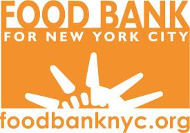

Hunger in New York City
Nearly 1.1 million New York City residents, or 12.9 percent, are food insecure. New York City residents make up half (50 percent) of all food insecure people living in New York State. New York City's food insecurity rate is 12 percent higher than the national rate, and 16 percent higher than the New York State rate.
More than 37.2 million United States residents, or 11.5 percent, are food insecure.
Nearly 2.2 million New York State residents, or 11.1 percent, are food insecure.
Food security means access by all people at all times to enough food for an active, healthy life. While the data presented below reflects the pre-COVID period, it is projected that the increase in the number of food insecure individuals due to COVID-19 could be comparable to the increase in the unemployment rate.
New York City’s food insecurity rate is 12 percent higher than the national rate, and 16 percent higher than the New York State rate.
In order to end help end this issue in New York City, click one of the links below to donate.
